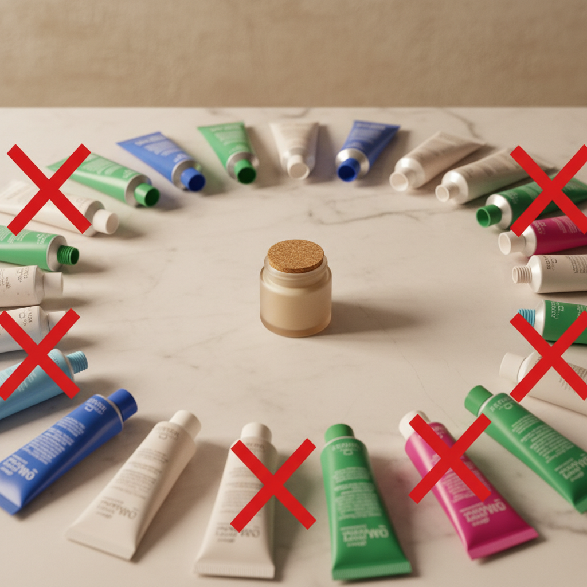
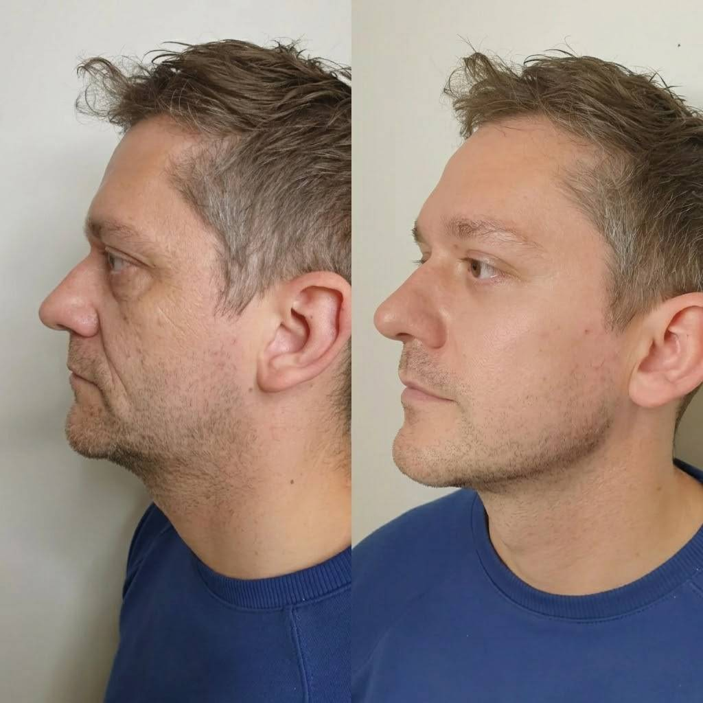
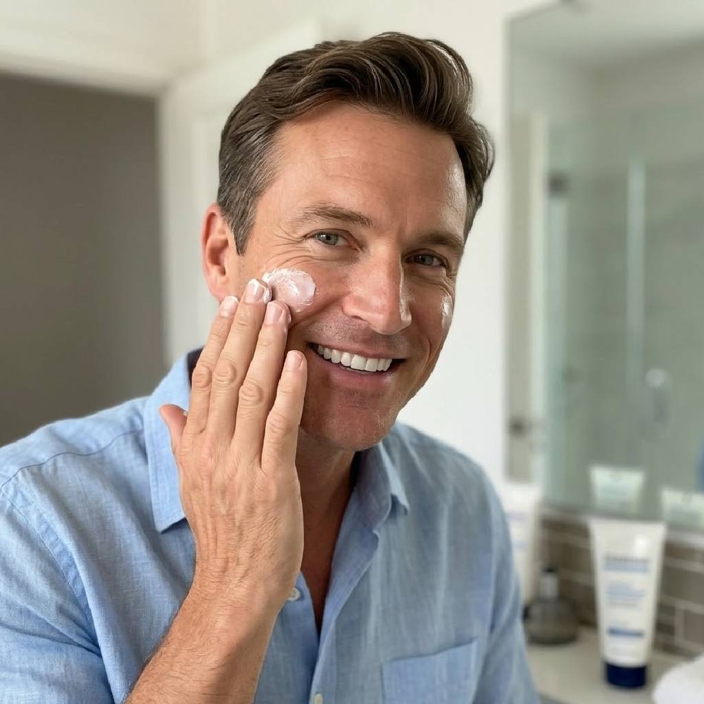
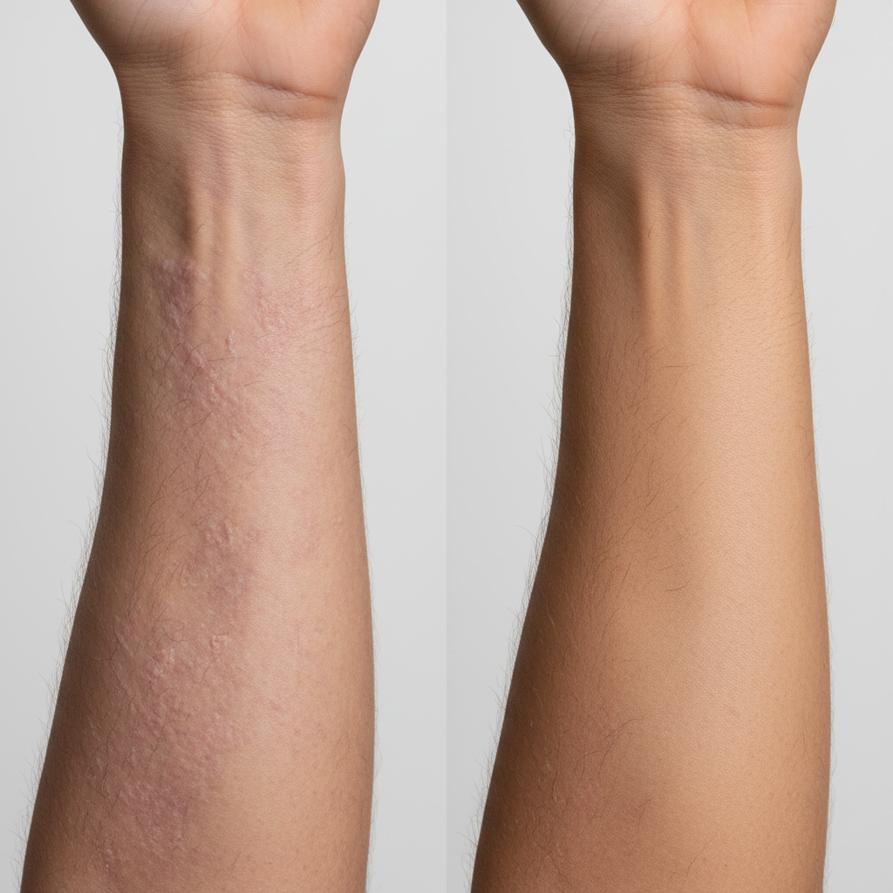
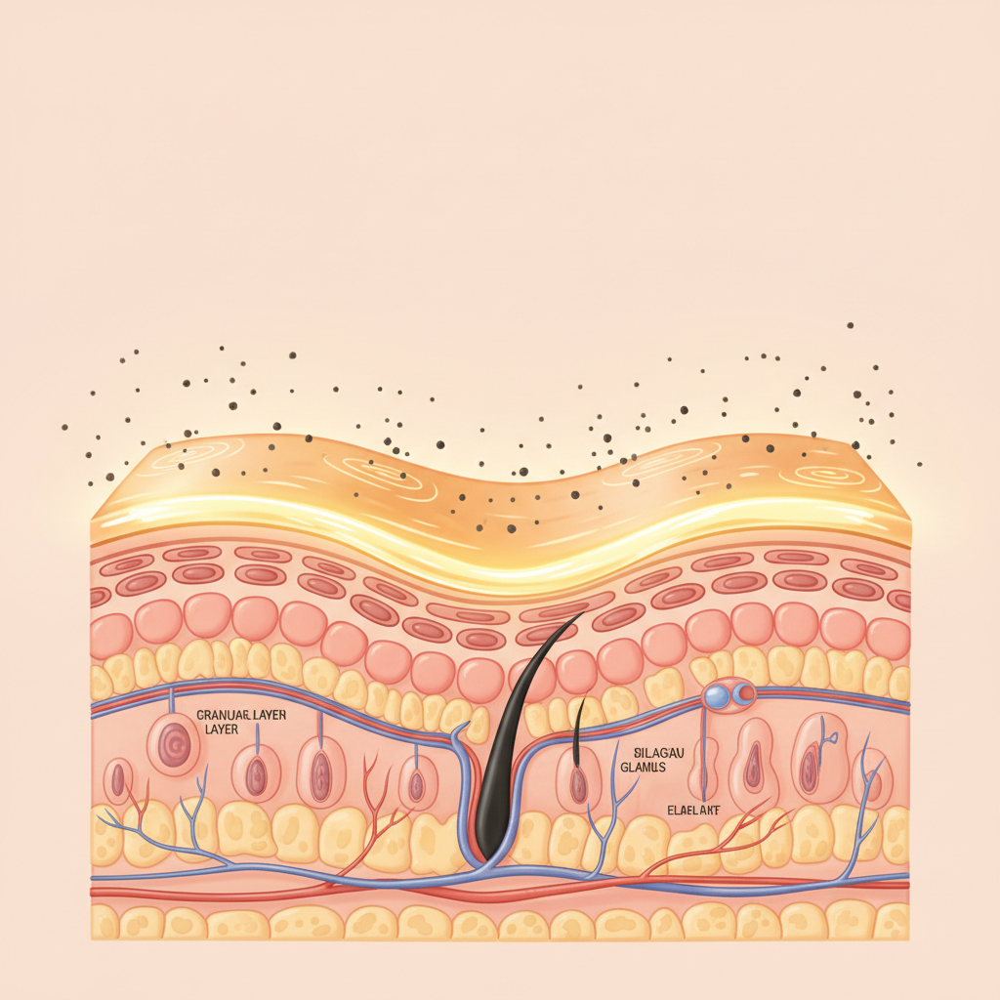
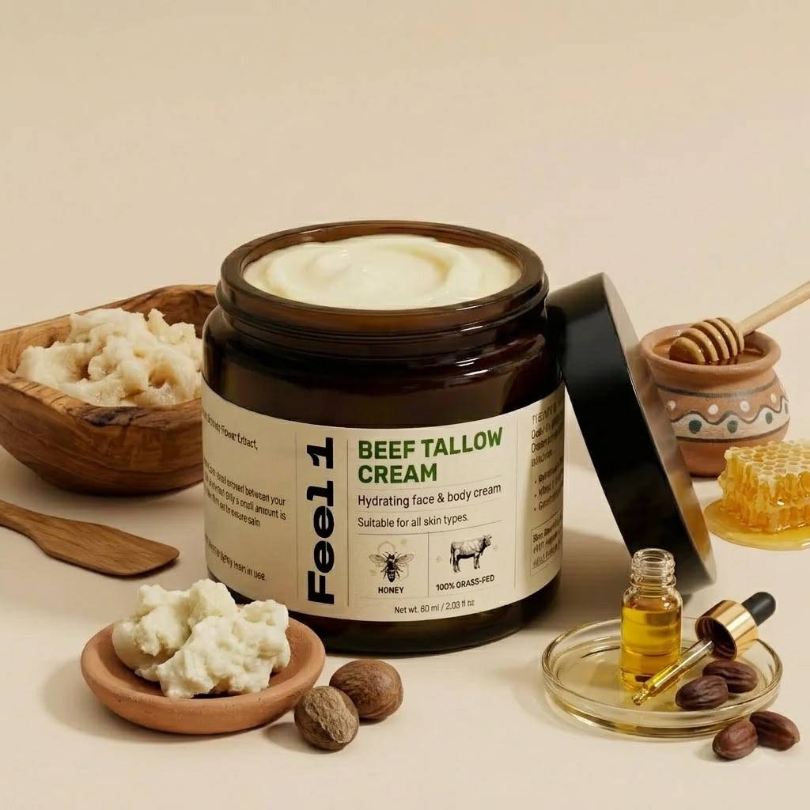
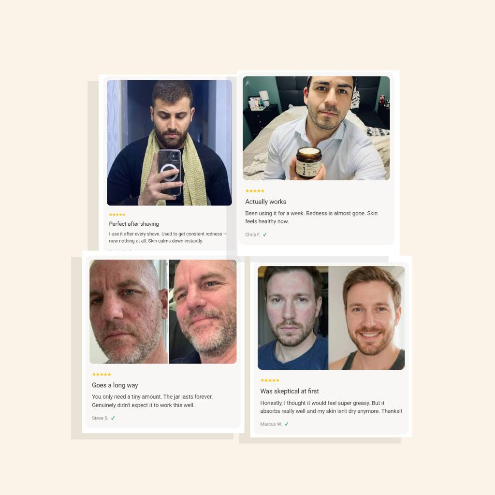

Gründergeschichte · Produktbericht
Lerne die Feel1 Rindertalg Creme kennen: das einzigartige Naturkraftwerk aus bio-verfügbaren Inhaltsstoffen, die deine Haut wirklich versteht – entwickelt in Deutschland, für echte Männer.
Feel1 Rindertalg Creme — entwickelt in Deutschland aus natürlichen Inhaltsstoffen.
„Feel1 ist nicht einfach eine weitere Rindertalg-Marke. Wir stehen für Wahrheit und Transparenz – und dafür, Produkte herzustellen, die deinen Körper wirklich unterstützen. Gegen Konzerne anzukämpfen, die dir toxische Synthetics verkaufen, ist unser Antrieb. Wir machen Hautpflege, die wir selbst jeden Tag benutzen."
— Das Feel1-Gründerteam
Es ist wie ein Auto mit dem falschen Kraftstoff betanken – es funktioniert einfach nicht.
Seit 50 Jahren verkaufen dir Kosmetikkonzerne synthetische Inhaltsstoffe, die deine Haut buchstäblich nicht aufnehmen kann.
Deshalb bringt nichts wirklich etwas – egal wie viel du ausgibst.
Dabei hatte deine Großmutter die Antwort längst:
Grasgefütterter Rindertalg.
Er ist den natürlichen Ölen deiner Haut molekular so ähnlich, dass er vollständig aufgenommen wird. Deshalb hatten Männer in den 1940er-Jahren mit 60 noch straffe, gesunde Haut – ohne ein einziges synthetisches Produkt.
Warum verschwand Rindertalg dann?
Weil man ihn nicht patentieren kann.
Auf einem Inhaltsstoff, den jeder herstellen kann, lässt sich kein Milliardenkonzern aufbauen. Und wenn ein Produkt die Haut wirklich heilt, hört der Kunde auf zu kaufen. Ein geheilter Kunde ist ein verlorener Kunde.
Also ersetzte die Industrie ab den 1970er-Jahren Rindertalg durch patentierte Synthetics. Sie erfanden 10-Schritte-Routinen. Sie entwickelten Produkte, die nur 2 Stunden wirken – damit du immer wieder nachkaufst.
Feel1 dreht das um. Unsere Rindertalg Creme aus grasgefüttertem Rindertalg, Bio-Jojobaöl, Sheabutter und Naturhonig ist das Ergebnis monatelanger Entwicklungsarbeit – dermatologisch getestet, ohne Kompromisse.
Hier sind 11 Gründe, warum Männer auf Feel1 schwören. Und warum die Kosmetikindustrie hofft, dass du das nie herausfindest.
Nutze Feel1 als Feuchtigkeitscreme, After-Shave-Balsam, Augenpflege und Lippenpflege – alles in einem einzigen Tiegel. Ein Tiegel reicht für Gesicht, Lippen und trockene Stellen an Händen und Ellbogen. Deine Routine wird einfacher – und die Ergebnisse werden besser.

Trage eine dünne Schicht auf Wangen, Lachfalten, Hals und Augenpartie auf. Mit zunehmendem Alter produziert die Haut immer weniger ihrer eigenen Schutzöle. Feel1 ersetzt diese – mit denselben Fettarten, die deine Haut von Natur aus kennt. Feine Linien wirken weicher, Haut straffer.

Strahlende Haut. Perfekter Teint – ohne Make-up. Weniger raue Textur. Kein trockenes Gefühl mehr rund ums Auge oder an den Armen. Naturhonig wirkt als natürlicher Zellerneuerer, Sheabutter glättet Unebenheiten. Das Ergebnis erkennst du – und andere auch.

Keine 2-Stunden-Wirkung und dann wieder von vorne. Bio-Jojobaöl hilft der Haut, Feuchtigkeit wirklich zu speichern – nicht nur oberflächlich zu überdecken. Besonders nach der Rasur oder nach Sport: kein Brennen, kein Straffen, kein trockenes Ziehen.
Die entzündungshemmenden Eigenschaften von Rindertalg sind seit Jahrhunderten bekannt. Feel1 legt eine schützende Schicht auf gereizte, schuppige Haut – beruhigt Rötungen, lindert Spannungsgefühl und unterstützt die Heilung. Auch bei empfindlicher Haut oder nach aggressiver Rasur.

Eine intakte Hautbarriere schützt vor Umwelteinflüssen, Bakterien und vorzeitiger Alterung. Vitamin D und K in Rindertalg unterstützen genau diese Regeneration. Feel1 repariert – statt wie die meisten Cremes nur zu überdecken, was kaputtgeht.

Das ist Ernährung für die Haut aus der Natur. Grasgefütterter Rindertalg liefert fettlösliche Vitamine A, D, E und K sowie Fettsäuren, die deine Haut bereits kennt und sofort nutzen kann. Keine synthetischen Zusätze. Keine leeren Versprechen. Nur echte Wirkstoffe, die wirklich ankommen.
Lies das Etikett – kein Buchstabensuppen-Kauderwelsch. Feel1 verzichtet auf harte Synthetics, undurchsichtige Füllstoffe und künstliche Duftstoffe. Die vollständige Zutatenliste: Grasgefütterter Rindertalg, Bio-Jojobaöl, Sheabutter, Naturhonig. Das ist alles. Und das reicht.

Feel1 ist nicht nur natürlich – es ist auch geprüft. Die Formel wurde dermatologisch auf Hautverträglichkeit getestet. Sicher für empfindliche Haut, sicher für den täglichen Einsatz – ohne Kompromisse bei der Qualität.
Deine Haut erkennt Rindertalg als körpereigen – er zieht vollständig ein, ohne einen fettigen oder klebrigen Film zu hinterlassen. Und anders als viele Naturprodukte: Feel1 ist komplett geruchsneutral. Kein aufdringlicher Eigengeruch, kein künstliches Parfüm. Einfach saubere Pflege, die sich natürlich anfühlt.
Echte Kunden, echte Ergebnisse: weichere Haut, weniger raue Stellen, gleichmäßigerer Teint und ein natürliches Leuchten. Feel1 hat über 237 verifizierte Bewertungen gesammelt – nicht wegen Marketing, sondern weil es funktioniert. Das ist die beste Empfehlung, die wir kennen.

Feel1 Rindertalg Creme für Männer gibt es aktuell nur direkt über die offizielle Website – in limitierter Stückzahl pro Charge. Da jede Charge handwerklich klein gehalten wird, um Frische und Qualität zu garantieren, sind Phasen mit ausverkauftem Lager nicht ungewöhnlich. Bestell am besten gleich mehrere Tiegel, wenn du auf Nummer sicher gehen willst.
Tipp: Das 3er-Set ist am beliebtesten – und spart am meisten.Eine erbsengroße Menge reicht für das gesamte Gesicht. Morgens nach der Reinigung für Schutz und Feuchtigkeit, abends zur Regeneration über Nacht, und direkt nach der Rasur als beruhigender Balsam – ohne Brennen, ohne Rötungen. Der Tiegel reicht bei regelmäßiger Nutzung ca. 4–6 Wochen.
Tipp: Auf leicht feuchter Haut aufgetragen zieht die Creme noch besser ein.Erste Veränderungen – weichere Haut, weniger Rötungen, ebenmäßigerer Teint – berichten Nutzer typischerweise nach 2–4 Wochen. Tiefere Wirkungen auf Falten und Hautstruktur zeigen sich meist nach 6–12 Wochen. Haut braucht Zeit zur Regeneration – gib Feel1 die Chance, wirklich anzusetzen.
Tipp: Auch als Geschenk für Väter, Partner oder Freunde beliebt.Feel1 produziert in kleinen, hochwertigen Chargen. Aktuell ist die laufende Charge zu über 60% vergriffen. Der aktuelle Aktionspreis von €24,99 (statt €49,98) gilt nur solange der Vorrat reicht. Sichere dir jetzt dein Exemplar – bevor der Preis wieder steigt.
Jetzt bestellen · Versandkostenfrei ab €30
Nur €24,99 statt €49,98 · 50% Rabatt · Inkl. 30 Tage Garantie
30 Tage Geld-zurück-Garantie · Kein Risiko · Einfache Rücksendung